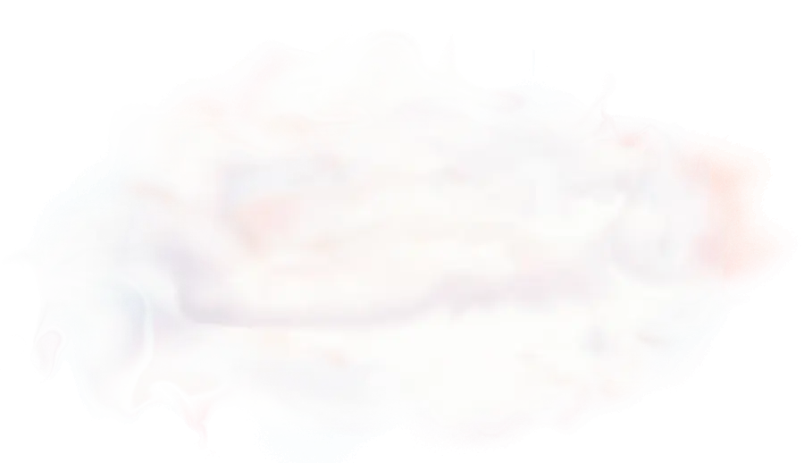
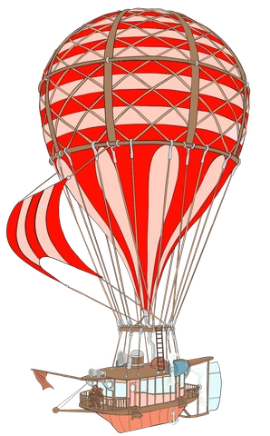
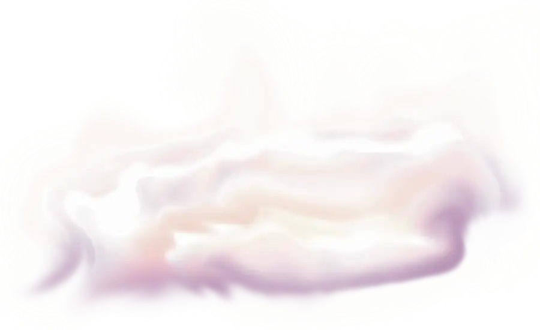

No frame. No background. Just your animation.
Start with your artwork. Glimmerglass encodes your animation into a lightweight transparent video and hands you one adjustable component, every responsive size already inside.
Lifetime license, one payment.
Add your artwork
Drop in an animation or a folder of PNG frames, transparency intact. Animated .webp welcome.
Find the right fit
Preview different sizes and backgrounds. Adjust quality and compare the estimated file size before you commit.
Create and place
One component, every size inside it. Place it in your scene and you’re done moving things around.



The right file for every device
The player chooses a file for the visitor’s device, so phones do not need the largest version.
Transparency, everywhere
Real alpha in every browser. No checkerboards, no hacks, no green screen cosplay.
One component, not twelve
The Framer plugin gives you a component with playback and layout settings. Every responsive size lives inside it, so you move one thing around your scene, not a stack of them.
Proof it’s the original.
Content Credentials receipts are planned. They will let people check whether a file has changed since it was signed.
Built for AI output
Your AI tools keep handing you animated .webp files. Glimmerglass turns them into proper transparent video, light enough for the real web.
Lifetime license, one payment
Your license is for you, on your own browsers and computers. There's a soft limit of 5 browsers to catch shared keys - normal use never touches it. Buy your key on Gumroad. It arrives by email.
Ready to try it?
Buy your key on Gumroad, drop it into the Framer plugin, and your first transparent scene is live in minutes. One payment, yours for good.
Need a hand?
Tell us your device, input format and the error you see. Keep license keys and private artwork out of your first message.
mike@houseofkoco.com